PIVPy Feature Gallery
A visual reference showcasing the post-processing, coherent structure identification, turbulence statistics, and visualization features available in PIVPy.
All examples below use the exact same reproducible synthetic flow benchmark: a 16-frame 2D turbulent vortex wake on a $64 \times 64$ grid with ground-truth vortices and shear layers.
import pivpy.pivpy # registers the .piv accessor
from pivpy import synthetic
# Standard reproducible benchmark field
ds = synthetic.multivortex(n_frames=16, n=64, n_vortices=6, seed=42)
1. Kinematics & Velocity Gradients
Compute spatial derivatives and derived kinematic fields directly from velocity components $(u, v)$.
The Euclidean speed $|\mathbf{u}| = \sqrt{u^2 + v^2}$ rendered as a background contour with overlaid velocity vectors and a reference arrow key.
fig, ax = ds.piv.plot(background="mag", cmap="viridis", skip=2)
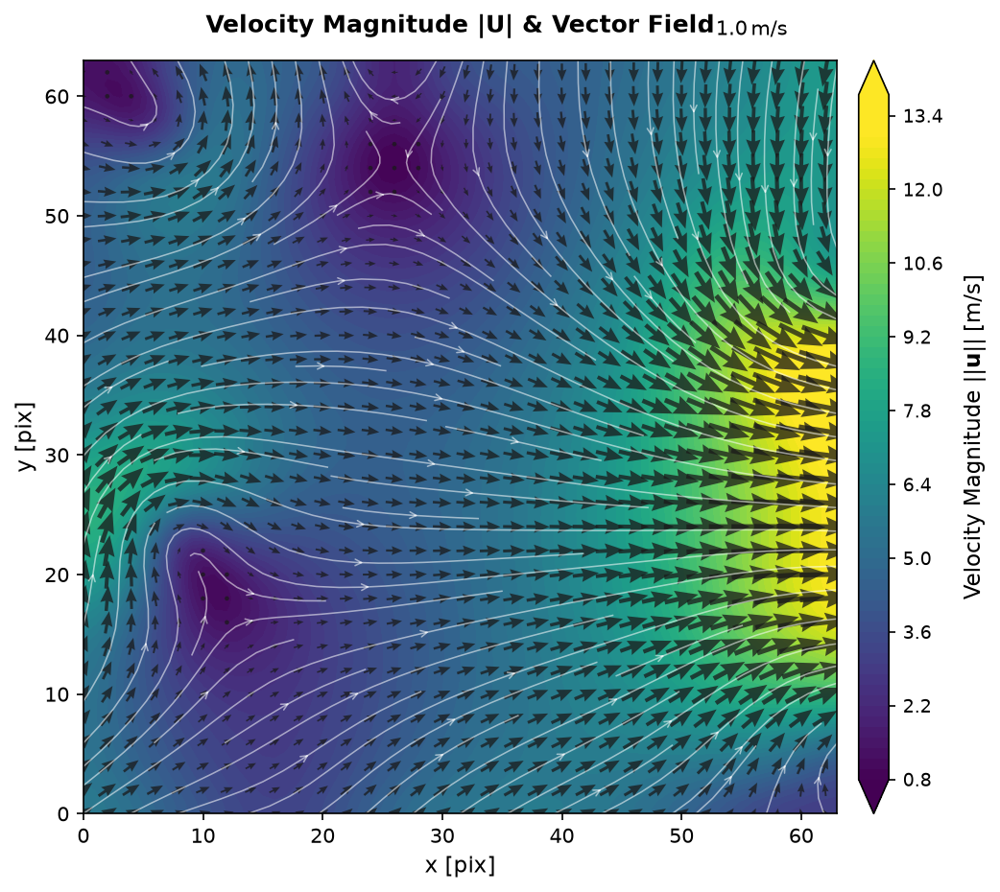
Out-of-plane vorticity $\omega_z = \frac{\partial v}{\partial x} - \frac{\partial u}{\partial y}$. Also available via noise-robust closed-contour circulation (method="circulation").
fig, ax = ds.piv.plot(background="vorticity", cmap="coolwarm", skip=2)
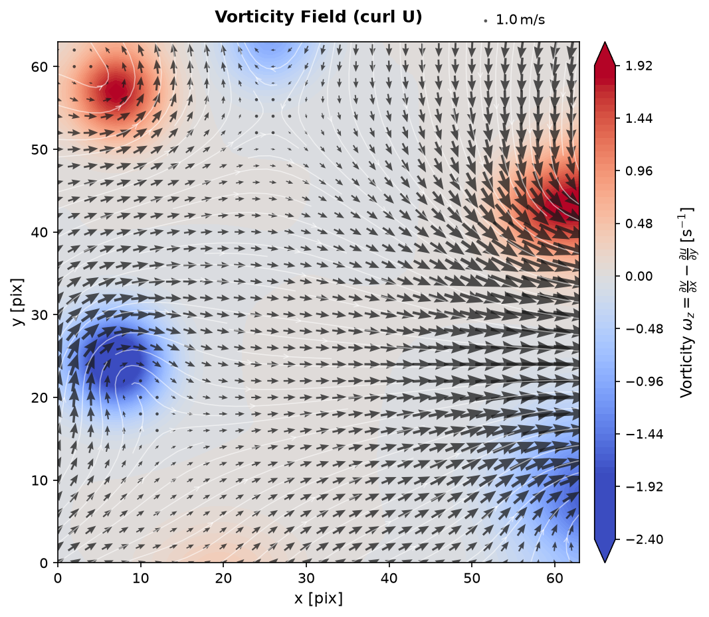
Two-dimensional velocity divergence $\nabla \cdot \mathbf{u} = \frac{\partial u}{\partial x} + \frac{\partial v}{\partial y}$ (measures 2D out-of-plane expansion/compression in incompressible flows).
fig, ax = ds.piv.plot(background="divergence", cmap="bwr", skip=2)
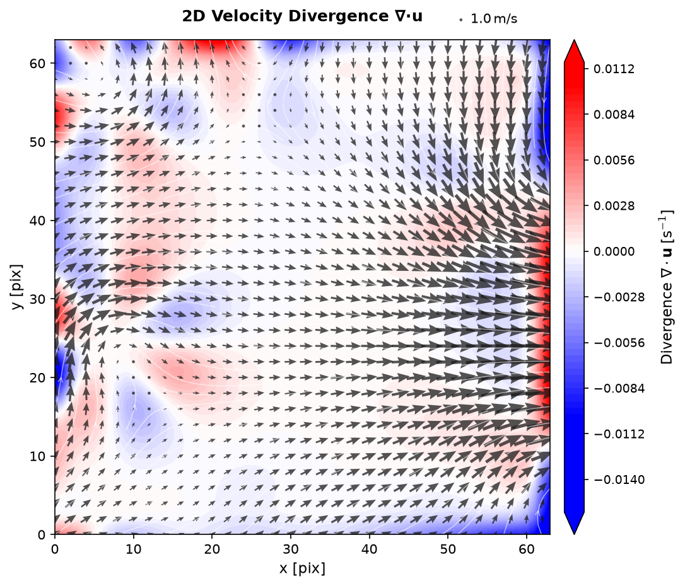
Scalar shear strain rate magnitude $S_{xy} = \left(\frac{\partial u}{\partial x}\right)^2 + \left(\frac{\partial v}{\partial y}\right)^2 + \frac{1}{2}\left(\frac{\partial u}{\partial y} + \frac{\partial v}{\partial x}\right)^2$.
fig, ax = ds.piv.plot(background="strain", cmap="inferno", skip=2)
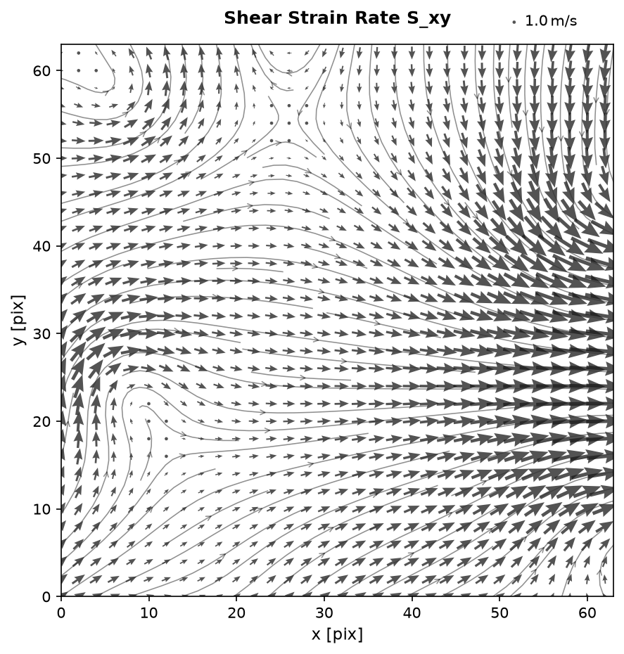
Material convective acceleration magnitude $|(\mathbf{u} \cdot \nabla)\mathbf{u}| = \sqrt{\left(u \frac{\partial u}{\partial x} + v \frac{\partial u}{\partial y}\right)^2 + \left(u \frac{\partial v}{\partial x} + v \frac{\partial v}{\partial y}\right)^2}$.
fig, ax = ds.piv.plot(background="accel", cmap="magma", skip=2)
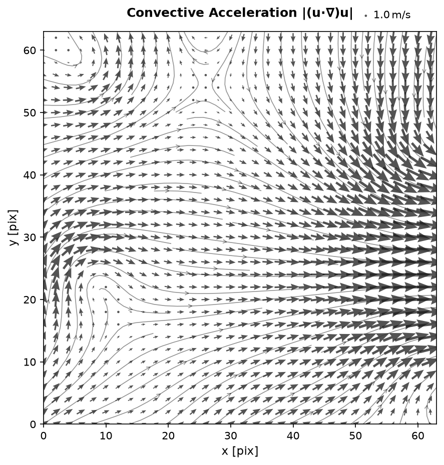
2. Coherent Vortex Identification
Identify and locate coherent vortex cores and vortex boundaries using Galilean-invariant and topological criteria.
Normalized angular momentum criterion (Graftieaux et al., 2001). Reaches $\pm 1$ at ideal vortex centers; $| \Gamma_1 | \ge \frac{2}{\pi} \approx 0.64$ bounds vortex cores.
ds_g1 = ds.piv.gamma1(radius=3, name="gamma1")
fig, ax = ds_g1.piv.plot(background="gamma1", cmap="coolwarm", clim=(-1.0, 1.0), skip=2)
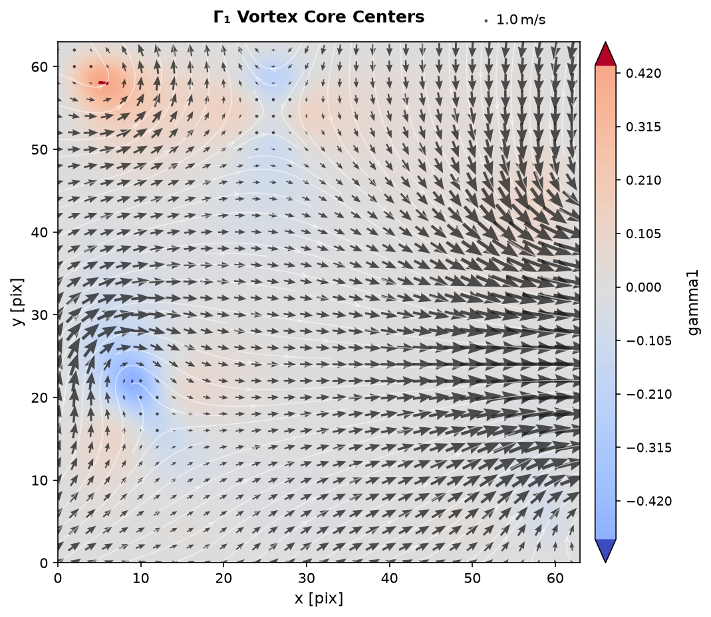
Galilean-invariant criterion subtracting local convective velocity $\tilde{\mathbf{U}}_P$. Accurately identifies the outer boundary of advecting vortex cores.
ds_g2 = ds.piv.gamma2(radius=3, name="gamma2")
fig, ax = ds_g2.piv.plot(background="gamma2", cmap="coolwarm", clim=(-1.0, 1.0), skip=2)
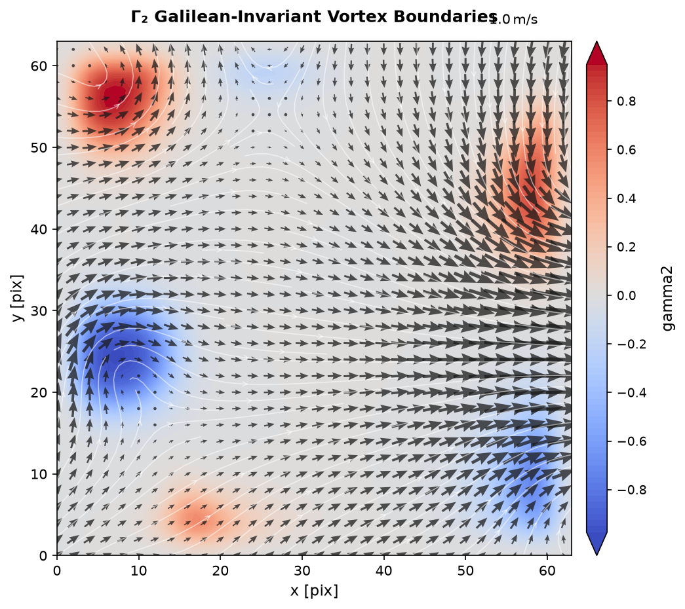
Second invariant of the velocity gradient tensor $Q = \frac{1}{2}(\Omega_{ij}\Omega_{ij} - S_{ij}S_{ij})$. Regions with $Q > 0$ indicate rotation dominates over strain rate.
ds_q = ds.piv.q_criterion(name="Q")
fig, ax = ds_q.piv.plot(background="Q", cmap="PiYG", skip=2)
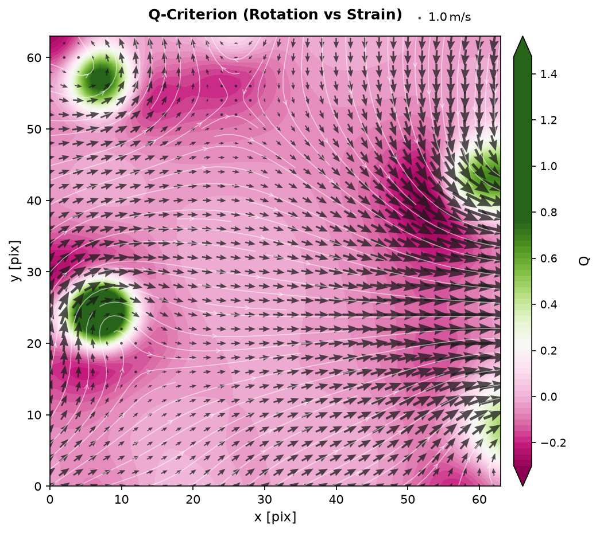
Separates elliptic (vortex core, $Q_{OW} < 0$) from hyperbolic (shear layer / saddle point, $Q_{OW} > 0$) regions: $Q_{OW} = s_n^2 + s_s^2 - \omega^2$.
ds_ow = ds.piv.okubo_weiss(name="Q_ow")
fig, ax = ds_ow.piv.plot(background="Q_ow", cmap="PRGn", skip=2)
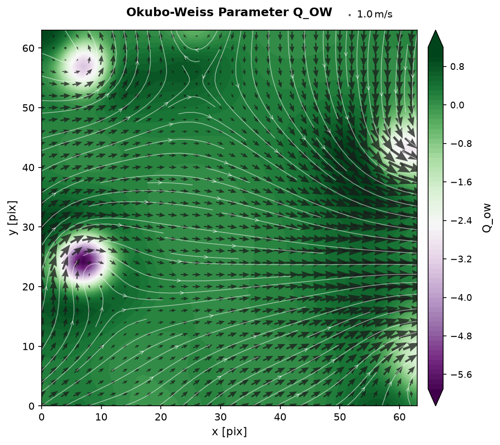
3. Turbulence Statistics & Structure Analysis
Analyze multi-frame time series and ensembles with comprehensive statistical and structural tools.
Time-averaged turbulent kinetic energy $k = \frac{1}{2}(\langle u'^2 \rangle + \langle v'^2 \rangle + \langle w'^2 \rangle)$ computed from ensemble velocity fluctuations.
ds_tke = ds.piv.tke(name="tke_field", time_average=True)
fig, ax = ds_tke.piv.plot(background="tke_field", cmap="plasma", skip=2)
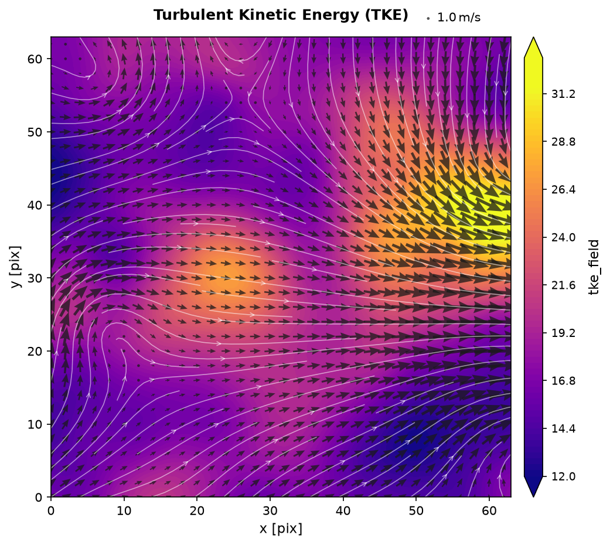
Time-averaged Reynolds shear stress $-\langle u'v' \rangle$. For full 3D/stereo datasets, ds.piv.reynolds_stresses() returns all normal and shear stress components.
ds_rss = ds.piv.reynolds_stress(name="rey_stress")
fig, ax = ds_rss.piv.plot(background="rey_stress", cmap="bwr", skip=2)
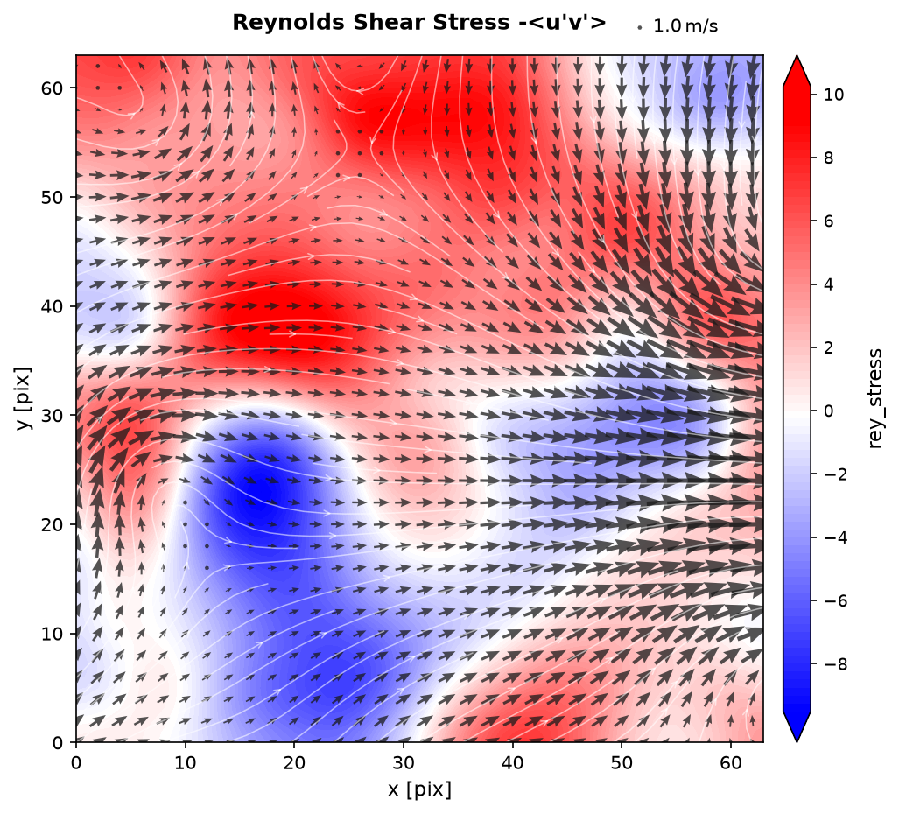
Localized cross-covariance $R_{uu}(\mathbf{x}; \mathbf{x}{ref}) = \frac{\langle u'(\mathbf{x}) u'(\mathbf{x}$ relative to a reference probe point.}) \rangle}{\sqrt{\langle u'^2(\mathbf{x})\rangle \langle u'^2(\mathbf{x}_{ref})\rangle}
x_mid, y_mid = float(ds.x.mean()), float(ds.y.mean())
corr = ds.piv.two_point_correlation(var_name="u", x_ref=x_mid, y_ref=y_mid, swap_dims=False)
fig, ax = plt.subplots(figsize=(6, 5))
cf = ax.contourf(corr.x, corr.y, corr.values, levels=30, cmap="coolwarm")
ax.plot(x_mid, y_mid, "k+", markersize=14, markeredgewidth=2)
fig.colorbar(cf, ax=ax, label=r"$R_{uu}$")
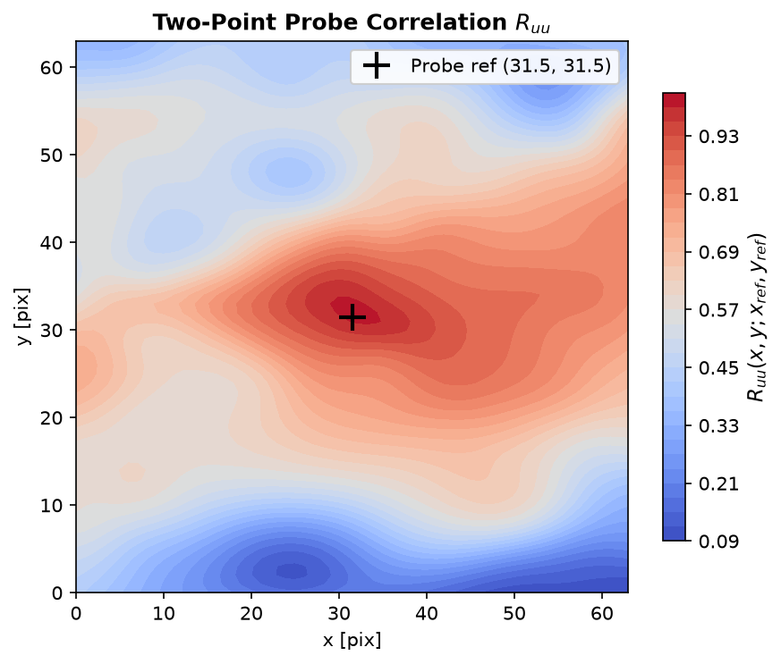
Classifies turbulent fluctuations into 4 quadrants ($Q_1$ outward, $Q_2$ ejection, $Q_3$ inward, $Q_4$ sweep) with hyperbolic hole filtering $|u'v'| \ge H |\langle u'v' \rangle|$.
qa = ds.piv.quadrant_analysis(x_var="u", y_var="v")
# Returns Dataset with:
# qa["fraction"] -- stress contribution per quadrant
# qa["duration"] -- residence frequency per quadrant
# qa["conditional_u"], qa["conditional_v"] -- conditional means
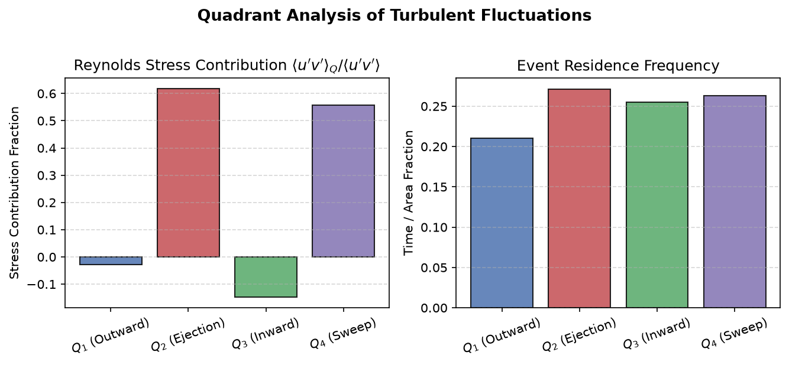
2D spatial wavenumber energy spectrum $E(k_x, k_y)$ and radially-integrated 1D spectrum $E(k)$ with theoretical Kolmogorov $-5/3$ reference slope.
spec = ds.piv.energy_spectrum(radial=True, detrend=True)
# spec["E2D"]: 2D wavenumber energy distribution
# spec["E_radial"]: 1D radial spectrum over wavenumber k
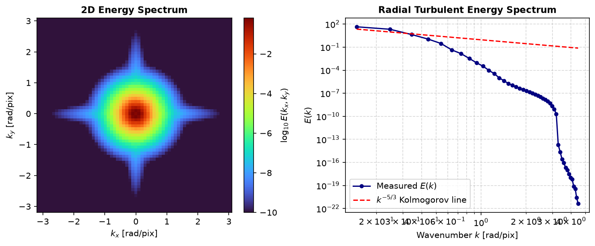
Multi-model length scale estimation from spatial correlation: $1/e$ cutoff distance, zero-crossing integral, or exponential / bi-exponential fitting.
# 1/e threshold distance (with linear interpolation)
L_1e = ds.piv.length_scale(variable="u", dim="x", method="1e")
# Exponential decay fit R(r) = exp(-r / L)
L_fit = ds.piv.length_scale(variable="u", dim="x", method="fit", fit_model="single")
# Bi-exponential fit (separates large eddies from fine scales)
params = ds.piv.length_scale(variable="u", dim="x", method="fit", fit_model="bi")
4. Quality Control & Outlier Filtering
Validate, clean, and smooth noisy vector fields.
Westerweel & Scarano (2005) universal outlier detection test comparing local residual fluctuation against the median of surrounding neighbors, followed by 2D bi-cubic hole inpainting.
# Identify spurious vectors and replace with bi-cubic interpolation
ds_cleaned = ds_noisy.piv.clean(threshold=2.0)
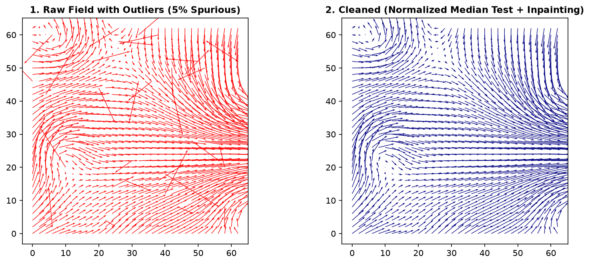
1D Savitzky-Golay polynomial filtering and B-Spline smoothing along arbitrary coordinate dimensions (x or y), with support for analytical derivatives (deriv=1 for noise-free gradients).
# 1D Savitzky-Golay filter along x (window=5, polynomial degree=2)
u_smooth = ds.piv.smooth_savgol(var_key="u", dim="x", window_length=5, polyorder=2)
# 1D B-spline analytical differentiation: du/dy without numerical noise
dudy = ds.piv.smooth_spline(var_key="u", dim="y", deriv=1)
5. Flow Visualization Modes
Render publication-ready vector fields and flow trajectories with customizable density and coloring.
Streamlines tracing instantaneous velocity trajectories, colored by velocity magnitude or any scalar field.
speed = np.sqrt(ds["u"].isel(t=0)**2 + ds["v"].isel(t=0)**2).values
fig, ax = ds.piv.streamplot(color=speed, cmap="plasma", density=1.2)
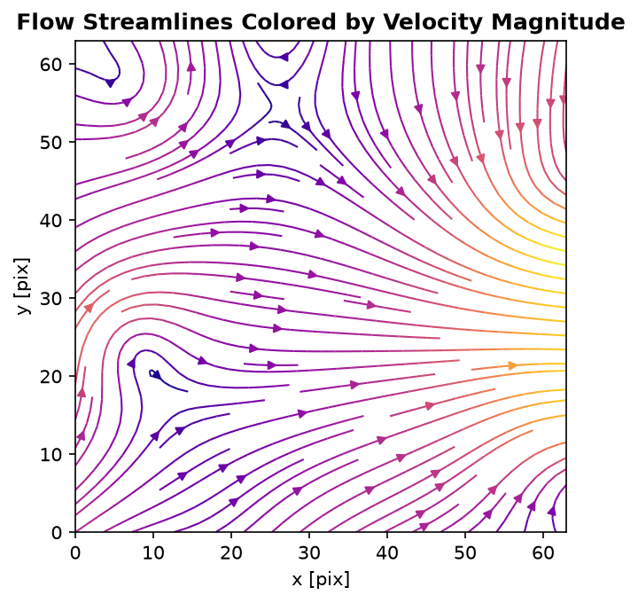
High-performance animation updating vector artists (quiver.set_UVC) in place, exportable to .mp4 or .gif.
# Interactive FuncAnimation
anim = ds.piv.animate(background="vorticity", skip=2, interval=60)
# Direct video exporter
ds.piv.to_movie("vortex_wake.mp4", background="vorticity", fps=15)
Quick Reference Summary
| Feature Category | Accessor Method | Primary Return | Typical Use Case |
|---|---|---|---|
| Composite Visualization | ds.piv.plot() |
(Figure, Axes) |
One-line publication-ready flow figure with background, arrows, key |
| Vorticity / Curl | ds.piv.vorticity() |
Dataset |
Fluid rotation rate ($\omega_z = \partial v/\partial x - \partial u/\partial y$) |
| Streamlines | ds.piv.streamplot() |
(Figure, Axes) |
Flow trajectories and recirculation visualization |
| Vortex Core Center | ds.piv.gamma1() |
Dataset |
Normalized angular momentum ($\Gamma_1 \approx \pm 1$ at centers) |
| Vortex Boundary | ds.piv.gamma2() |
Dataset |
Galilean-invariant vortex boundary detection |
| Rotation vs Strain | ds.piv.q_criterion() |
Dataset |
Second invariant $Q$ (coherent vortices vs shear layers) |
| Kinetic Energy | ds.piv.kinetic_energy() |
Dataset |
Instantaneous kinetic energy field $\frac{1}{2}(u^2 + v^2)$ |
| Turbulent Kinetic Energy | ds.piv.tke() |
Dataset |
Time-averaged or instantaneous fluctuation energy $\frac{1}{2}\sum \langle u_i'^2 \rangle$ |
| Reynolds Stresses | ds.piv.reynolds_stresses() |
Dataset |
Multi-component stress tensor ($\langle u'u' \rangle, \langle v'v' \rangle, \langle u'v' \rangle$, etc.) |
| Fluctuation Products | ds.piv.product("u'v'") |
DataArray |
String-driven fluctuation/raw product parser |
| Two-Point Correlation | ds.piv.two_point_correlation() |
DataArray |
Localized probe correlation $R_{uu}(\mathbf{x}; \mathbf{x}_{ref})$ |
| Integral Length Scale | ds.piv.length_scale() |
DataArray |
Eddy length scale via $1/e$, zero-crossing integral, or exponential fit |
| Quadrant Analysis | ds.piv.quadrant_analysis() |
Dataset |
Burst/sweep classification and Reynolds stress contribution |
| Outlier Cleaning | ds.piv.clean() |
Dataset |
Westerweel-Scarano normalized median test + bi-cubic inpainting |
| Profile Smoothing | ds.piv.smooth_savgol() / smooth_spline() |
DataArray |
Savitzky-Golay and B-spline filtering & analytical derivatives |
| Energy Spectrum | ds.piv.energy_spectrum() |
Dataset |
2D wavenumber $E(k_x, k_y)$ and 1D radial $E(k)$ spectra |